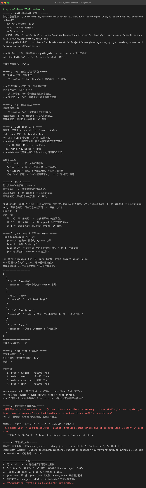
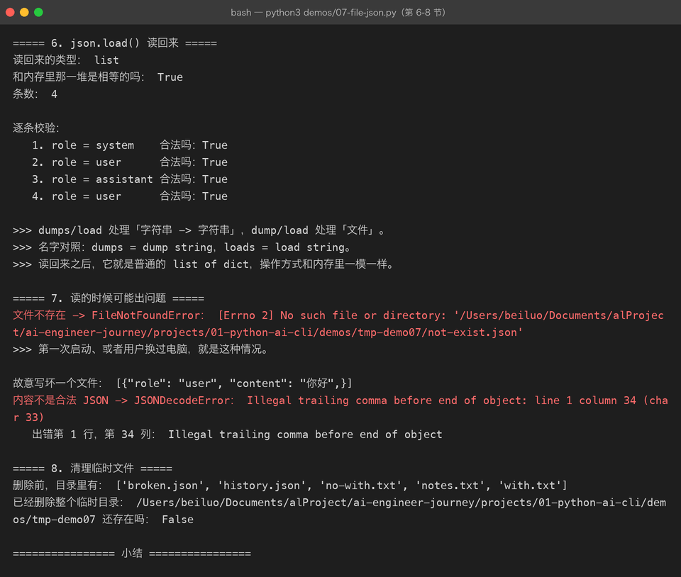

Lesson 07 — File / JSON：让 AI CLI Assistant 记住历史
AI Engineer Journey · Project 01 — Python AI CLI Assistant 学习方式：Project-Based Learning【项目驱动学习】 主线项目：Python AI CLI Assistant 本章目标：通过给 AI CLI Assistant 增加“保存聊天记录”和“恢复聊天记录”能力，学习文件操作、JSON 持久化、路径、上下文管理器，以及文件相关异常处理。
1. 这一章我们遇到了什么问题？
上一章结束时，我们的 AI CLI Assistant 已经可以：
/help
/history
/clear
/size
/last
/exit而且：
messages已经能够保存聊天记录。
例如：
messages = [
{
"role": "user",
"content": "你好"
},
{
"role": "assistant",
"content": "你好，我是 AI Engineer Assistant。"
}
]程序运行期间完全没问题。
但是：
You: 你好
AI: 你好！
You: 我正在学习 Python
You: /exit然后程序关闭。
再次运行：
python main.py输入：
You: /history结果：
暂无消息。为什么？
因为：
messages只存在于程序运行期间的内存中。
程序退出：
Python 进程结束
↓
内存中的 messages 消失所以我们需要：
Persistence【持久化】
让数据离开内存后仍然存在。
2. 先理解一个重要区别：内存 vs 持久化
现在：
messages
↓
Python 内存
↓
程序运行期间存在这种数据：
Memory State【内存状态】
程序退出后就没了。
而如果：
messages
↓
JSON 文件
↓
磁盘即使 Python 进程结束，文件依然存在。
这种能力：
Persistence【持久化】
3. 先做一个最简单的文件项目
现在我们暂时不碰聊天。
需求：
程序运行时让用户写一句话，然后保存到文件。
例如：
请输入一句话：今天开始学习 Python最终创建：
note.txt内容：
今天开始学习 Python4. Python 如何创建文件？
最基本：
file = open(
"note.txt",
"w",
encoding="utf-8"
)然后：
file.write("今天开始学习 Python")最后：
file.close()现在：
Python
↓
open()
↓
note.txt
↓
write()
↓
close()文件就保存下来了。
5. open() 是什么？
：
open()用于：
打开一个文件。
最简单的形式：
open("文件名", "模式")常见模式先掌握：
"r" → read【读取】
"w" → write【写入】
"a" → append【追加】6. "w" 的坑
例如：
open("note.txt", "w")如果文件不存在：
创建文件。
如果文件已经存在：
默认会覆盖原来的内容。
例如原本：
第一句话
第二句话再次：
open("note.txt", "w")然后写：
file.write("第三句话")文件可能只剩：
第三句话所以以后使用 "w" 必须有意识。
7. "a"：追加
如果想在文件后面继续添加：
open("note.txt", "a")例如：
file.write("第三句话\n")原本：
第一句话
第二句话变成：
第一句话
第二句话
第三句话8. 但是这里马上出现一个工程问题
刚才：
file = open(...)
file.write(...)
file.close()如果：
file.write()过程中发生异常呢？
可能：
打开文件
↓
发生异常
↓
程序中断
↓
close() 没有执行所以 Python 提供更安全的方式：
with
9. with open(...)
推荐写：
with open(
"note.txt",
"w",
encoding="utf-8"
) as file:
file.write("今天开始学习 Python")这里不需要手动：
file.close()Python 会在代码块结束时处理资源关闭。
10. with 是什么？
先不要急着深入语法底层。
现在把：
with open(...) as file:理解为：
我准备在这个代码块里使用这个文件，代码块结束后自动处理资源清理。
所以：
with
↓
获取资源
↓
使用资源
↓
离开代码块
↓
清理资源后面学习数据库连接、网络连接、锁等资源时，还会再次看到类似思想。
11. 项目第一次加入文件
现在创建：
projects/01-python-ai-cli/先做一个实验：
def save_note(text):
with open(
"note.txt",
"w",
encoding="utf-8"
) as file:
file.write(text)
save_note("今天开始学习 Python")运行后：
note.txt存在。
12. 读取文件
现在问题变成：
程序启动以后怎么把内容读出来？
使用：
with open(
"note.txt",
"r",
encoding="utf-8"
) as file:
content = file.read()然后：
print(content)得到：
今天开始学习 Python所以：
写入：
Python
↓
open("w")
↓
write()
读取：
open("r")
↓
read()
↓
Python13. 现在回到 AI CLI Assistant
我们的真正需求是：
程序退出后保存 messages，下一次启动自动恢复。
例如：
第一次运行
You: 你好
You: 我正在学习 Python
You: /exit保存：
messages.json第二次运行：
程序启动
↓
读取 messages.json
↓
恢复 messages
↓
继续聊天这才是我们真正需要的功能。
14. 为什么不用普通 TXT？
当然可以。
例如：
user: 你好
assistant: 你好
user: 什么是 Python
assistant: ...但是以后我们还需要：
role
content
timestamp
metadata结构越来越复杂。
所以：
结构化聊天记录更适合使用 JSON。
15. JSON 回顾
上一章我们已经学过：
messages = [
{
"role": "user",
"content": "你好"
},
{
"role": "assistant",
"content": "你好！"
}
]这是：
Python
list+dict
现在我们需要：
Python 对象
↓
JSON
↓
文件所以：
json.dump()就派上用场了。
16. json.dump() vs json.dumps()
这是现在必须搞清楚的一个区别。
json.dumps()
json_text = json.dumps(messages)作用：
Python 对象 → JSON 字符串
也就是：
Python
↓
JSON Stringjson.dump()
json.dump(messages, file)作用：
Python 对象 → JSON 文件
也就是：
Python
↓
JSON
↓
File简单记：
dumps
↓
s = string
dump
↓
文件严格来说，dump() 的核心是写入类文件对象，而不只是某一个具体文件，但现在这样记忆足够。
17. 第一次实现保存历史
创建：
import json
def save_messages(messages):
with open(
"messages.json",
"w",
encoding="utf-8"
) as file:
json.dump(
messages,
file,
ensure_ascii=False,
indent=2
)调用：
save_messages(messages)结果：
messages.json内容：
[
{
"role": "user",
"content": "你好"
},
{
"role": "assistant",
"content": "你好！"
}
]18. ensure_ascii=False
为什么写：
ensure_ascii=False因为我们的内容可能有中文。
否则某些情况下 JSON 输出可能出现 Unicode 转义形式。
使用：
ensure_ascii=False可以让中文更容易直接查看。
19. indent=2
indent=2表示：
使用缩进格式化 JSON。
没有它可能是一行：
[{"role":"user","content":"你好"},{"role":"assistant","content":"你好！"}]有：
[
{
"role": "user",
"content": "你好"
},
{
"role": "assistant",
"content": "你好！"
}
]对于开发和调试更友好。


20. 读取历史
现在：
import json
def load_messages():
with open(
"messages.json",
"r",
encoding="utf-8"
) as file:
return json.load(file)调用：
messages = load_messages()这时候：
messages.json
↓
json.load()
↓
Python list + dict重新恢复到内存。
21. json.load() vs json.loads()
和之前一模一样：
json.loads()
json.loads(json_text)JSON 字符串：
JSON String
↓
Python Objectjson.load()
json.load(file)文件：
File
↓
JSON
↓
Python Object所以：
dump
load通常和文件相关。
dumps
loads通常和字符串相关。
22. 现在遇到第一个真实问题：文件可能不存在
第一次启动：
messages = load_messages()但是：
messages.json可能根本不存在。
于是：
FileNotFoundError这就刚好连接到上一章：
Exception Handling【异常处理】
23. 安全加载历史
修改：
import json
def load_messages():
try:
with open(
"messages.json",
"r",
encoding="utf-8"
) as file:
return json.load(file)
except FileNotFoundError:
return []这样：
第一次运行
↓
messages.json 不存在
↓
FileNotFoundError
↓
返回 []
↓
程序正常启动这就是：
文件持久化和异常处理第一次真正组合。
24. 还有第二种错误：JSON 文件损坏
假设某天：
messages.json被手动修改成：
hello world这不是合法 JSON。
那么：
json.load(file)可能出现：
JSONDecodeError所以我们的加载函数应该考虑：
except FileNotFoundError:
return []
except json.JSONDecodeError:
return []25. 这两个异常有什么区别？
FileNotFoundError意思：
文件根本不存在。
而：
JSONDecodeError意思：
文件存在，但内容不是合法 JSON。
这就是为什么：
不同异常应该区别处理。
26. 更合理的 load_messages()
import json
def load_messages():
try:
with open(
"messages.json",
"r",
encoding="utf-8"
) as file:
return json.load(file)
except FileNotFoundError:
return []
except json.JSONDecodeError:
print("AI: 聊天记录文件格式损坏，将从空记录开始。")
return []27. 保存也可能失败
例如：
磁盘权限
路径错误
磁盘空间不足因此：
def save_messages(messages):
try:
with open(
"messages.json",
"w",
encoding="utf-8"
) as file:
json.dump(
messages,
file,
ensure_ascii=False,
indent=2
)
except OSError as error:
print(f"AI: 保存聊天记录失败：{error}")这里出现：
OSError
这是 Python 中处理很多操作系统 / 文件系统相关错误的基础异常类型。
现在不用深入异常继承体系。
先理解：
文件操作失败
↓
OSError28. 项目第一次拥有 Persistence Layer【持久化层】
现在我们的代码可以变成：
conversation.py
│
├── add_message()
├── clear_history()
├── show_history()
├── get_message_count()
└── show_last_message()
storage.py
│
├── save_messages()
└── load_messages()注意：
storage.py是新角色。
它负责：
数据保存与读取。
而不是聊天逻辑。
29. 为什么要单独创建 storage.py？
因为现在有：
Conversation和：
Persistence两个不同职责。
所以：
conversation.py
↓
聊天记录在内存里怎么操作
storage.py
↓
聊天记录怎么保存到磁盘这就是上一章学习的：
Separation of Concerns【关注点分离】
再次被项目需求验证。
30. 项目结构升级
现在：
projects/
└── 01-python-ai-cli/
├── README.md
│
└── src/
└── ai_cli/
├── __init__.py
├── main.py
├── config.py
├── conversation.py
├── assistant.py
├── formatter.py
└── storage.py职责：
main.py
↓
程序入口和主流程
conversation.py
↓
内存中的消息管理
assistant.py
↓
助手响应
storage.py
↓
文件持久化
config.py
↓
配置
formatter.py
↓
输出格式31. storage.py
可以先写：
import json
HISTORY_FILE = "messages.json"
def save_messages(messages):
try:
with open(
HISTORY_FILE,
"w",
encoding="utf-8"
) as file:
json.dump(
messages,
file,
ensure_ascii=False,
indent=2
)
except OSError as error:
print(f"AI: 保存聊天记录失败：{error}")
def load_messages():
try:
with open(
HISTORY_FILE,
"r",
encoding="utf-8"
) as file:
return json.load(file)
except FileNotFoundError:
return []
except json.JSONDecodeError:
print(
"AI: 聊天记录文件格式损坏，"
"将从空记录开始。"
)
return []注意：
这只是当前教学阶段的实现，后面我们会进一步改造路径、配置和数据校验。
32. main.py 开始变得非常简单
主程序：
from assistant import generate_mock_response
from conversation import (
add_message,
clear_history,
get_message_count,
show_history,
)
from storage import (
load_messages,
save_messages,
)
def main():
messages = load_messages()
print("AI Engineer CLI Assistant")
while True:
user_input = input("\nYou: ")
if user_input == "/exit":
save_messages(messages)
print("AI: 再见！")
break
if user_input == "/history":
show_history(messages)
continue
if user_input == "/clear":
clear_history(messages)
save_messages(messages)
print("AI: 聊天记录已清空。")
continue
if user_input == "/size":
count = get_message_count(messages)
print(
f"AI: 当前共有 {count} 条消息。"
)
continue
try:
add_message(
messages,
"user",
user_input
)
answer = generate_mock_response(
user_input
)
add_message(
messages,
"assistant",
answer
)
save_messages(messages)
print(f"AI: {answer}")
except ValueError as error:
print(f"AI: 输入错误：{error}")
if __name__ == "__main__":
main()这里有一个很重要的变化：
程序启动
↓
load_messages()
↓
恢复历史以及：
消息产生
↓
save_messages()
↓
磁盘33. 现在第一次真正拥有“记忆”
运行：
You: 你好
AI: 我收到你的问题了：你好
You: 我正在学习 Python
AI: 我收到你的问题了：我正在学习 Python
You: /exit
AI: 再见！磁盘：
messages.json再次：
python main.py然后：
You: /history仍然能够看到之前的：
user: 你好
assistant: 我收到你的问题了：你好
user: 我正在学习 Python
assistant: 我收到你的问题了：我正在学习 Python这就是：
Persistence【持久化】
34. “记忆”到底是什么？
现在开始建立一个很重要的 AI 工程概念。
这个阶段的记忆其实不是：
大模型自己记住了。
而是：
程序
↓
保存 messages
↓
磁盘 JSON
↓
重新启动
↓
读取 JSON
↓
恢复 messages所以：
我们现在做的是应用层 Memory【应用层记忆】。
以后 Agent 的 Memory、Conversation Memory 都会继续建立在类似思想上，只是实现会复杂很多。
35. 内存记忆 vs 持久化记忆
现在可以画成：
Chat History
│
┌─────────┴─────────┐
↓ ↓
Runtime Persistence
运行时状态 持久化状态
│ │
↓ ↓
Python List JSON File
│ │
└─────────┬─────────┘
↓
AI Assistant联系描述
运行过程中，聊天消息保存在 Python 内存中的 messages List 里，程序可以快速读取和修改；为了让程序关闭后历史仍然存在，我们在需要时把 messages 序列化成 JSON 并写入磁盘。程序重新启动时，再从 JSON 文件读取并恢复到内存。因此，内存负责运行时操作，JSON 文件负责跨进程、跨启动保存状态。
36. 一个非常重要的项目设计问题
什么时候保存？
我们目前采用：
每次消息处理成功
↓
save_messages()退出时：
/exit
↓
save_messages()这样即使程序异常退出：
最近一次已经成功保存的消息仍然存在。
如果只在 /exit 时保存：
聊天很多
↓
程序崩溃
↓
没有保存
↓
全部丢失所以：
持久化时机本身也是工程设计问题。
37. 现在加入一个小实验：自动保存失败
你可以暂时故意：
HISTORY_FILE = "/invalid/path/messages.json"然后保存。
你会看到：
保存聊天记录失败而程序不会因为保存失败而直接崩溃。
这就是上一章异常处理的实际价值。
38. 这里开始建立“分层”的概念
现在我们的 Python AI CLI Assistant 有：
┌───────────────────────────────┐
│ main.py │
│ 程序入口 / 用户交互 / 流程 │
└──────────────┬────────────────┘
│
┌───────┼────────┐
↓ ↓ ↓
conversation assistant storage
对话管理 AI行为 持久化联系描述：
main.py负责协调整个流程；conversation.py管理运行时的消息；assistant.py负责产生助手回复；storage.py负责把运行时消息保存到磁盘和重新加载。各模块通过函数调用协作，但每个模块只负责自己的问题。
这就是我们从 Python 基础走向工程设计的过程。
39. 文件读取还有一个新问题：相对路径
我们现在：
open("messages.json", ...)这个路径到底在哪里？
答案是：
相对于当前工作目录（Current Working Directory，CWD），不一定是
storage.py所在目录。
例如你在：
projects/01-python-ai-cli/执行：
python src/ai_cli/main.py和你在：
projects/01-python-ai-cli/src/执行：
python ai_cli/main.py当前工作目录不同。
于是：
open("messages.json")可能写到不同位置。
这是一个非常典型的 Python 项目路径问题。
40. 现在先不急着解决
这是一个重要问题，但我们先记下来：
文件路径应该由项目明确管理，而不是随便写一个字符串。
未来学习：
pathlib时再正式解决。
今天先知道：
open("messages.json")的路径是相对于当前工作目录，而不是简单相对于当前.py文件。
这个认识非常重要。
41. pathlib 先认识名字
Python 更现代的路径处理方式：
from pathlib import Path例如：
path = Path("messages.json")检查：
print(path.exists())暂时不用系统学习 pathlib。
这里只是先知道：
后面我们会用更可靠的方式管理文件路径。
42. 本章项目升级
Project 01 — Python AI CLI Assistant
v0.1
输入 / 输出
✅
v0.2
List / Dict / JSON / Messages
✅
v0.3
Condition / Loop
✅
v0.4
Function
✅
v0.5
Module / Package
✅
v0.6
Exception / Validation
✅
v0.7
File / JSON Persistence
🔄
v0.8
venv / pip / Environment
⬜
v0.9
HTTP / API
⬜
v1.0
Real LLM CLI Assistant
⬜43. 本章知识地图
Python AI CLI Assistant
│
↓
messages
│
↓
Python List
│
↓
json.dump()
│
↓
messages.json
│
↓
磁盘
│
↓
程序重新启动
│
↓
json.load()
│
↓
Python List
│
↓
messages旁边还有异常处理：
File
│
├── FileNotFoundError
│
├── JSONDecodeError
│
└── OSError44. 本章的核心概念
File【文件】
程序与磁盘之间保存数据的基本方式。
Persistence【持久化】
让数据在程序结束后仍然存在。
Serialization【序列化】
把程序中的对象转换成适合保存 / 传输的形式。
Python
↓
JSONDeserialization【反序列化】
把保存 / 传输的数据重新变成程序对象。
JSON
↓
PythonContext Manager【上下文管理器】
我们本章通过：
with open(...) as file:学习了资源使用完成后的自动处理。
45. 主动回忆
不要回头看正文。
Q1
为什么上一章的：
messages = [...]程序退出以后会消失？
Q2
什么是 Persistence【持久化】？
请结合我们的 AI CLI Assistant 解释，不要背定义。
Q3
json.dump() 和 json.dumps() 有什么区别？
Q4
json.load() 和 json.loads() 有什么区别？
Q5
为什么：
with open(...) as file:通常比手动：
file = open(...)
...
file.close()更推荐？
Q6
如果：
messages.json不存在，会出现什么问题？
应该怎么处理？
Q7
如果文件存在，但是内容：
hello world不是合法 JSON，会发生什么？
Q8
为什么我们把：
save_messages()
load_messages()放到 storage.py，而不是继续堆进 conversation.py？
46. 实战 Challenge 1：保存聊天历史
不看上面的实现，自己写：
save_messages(messages)要求：
Python List
↓
JSON
↓
messages.json格式化 JSON：
ensure_ascii=False
indent=247. 实战 Challenge 2：恢复聊天历史
写：
load_messages()要求：
文件不存在
→ []
JSON 损坏
→ []
正常
→ 返回 messages至少区分：
FileNotFoundError
JSONDecodeError48. 实战 Challenge 3：完整启动恢复
让：
main()启动时自动：
load_messages()用户退出时：
save_messages()49. 实战 Challenge 4：自动保存
不要只在 /exit 保存。
每次成功添加一组：
user
assistant之后：
save_messages()验证：
聊天
↓
强制结束程序
↓
重新启动
↓
历史仍然存在思考：
为什么自动保存比只在退出时保存更可靠？
50. 实战 Challenge 5：损坏文件
手动把：
messages.json改成：
hello然后启动程序。
要求：
不要崩溃
提示文件损坏
使用空消息列表启动这一次你应该真正看到：
Exception Handling + File + JSON 是如何组合起来的。
51. 本章完成标准
Level 1
知道：
文件怎么打开
文件怎么读取
文件怎么写入Level 2
能使用：
with open(...)Level 3
会使用：
json.dump()
json.load()Level 4
能够区分：
dump
dumps
load
loadsLevel 5
能够自己完成：
save_messages()
和：
load_messages()
Level 6
能够处理：
FileNotFoundError
JSONDecodeError
OSErrorLevel 7
能够解释：
为什么
messages是“运行时记忆”，而messages.json是“持久化记忆”？
52. 项目架构现在已经开始像真正的软件了
AI CLI Assistant
│
main.py
│
┌───────────┼───────────┐
↓ ↓ ↓
conversation assistant storage
│ │ │
↓ ↓ ↓
messages response JSON
│ │
└──────────┬────────────┘
↓
persistence这条路线描述：
main.py负责程序入口和流程协调，conversation.py管理内存中的聊天状态，assistant.py提供当前的助手响应，storage.py将聊天状态序列化到 JSON 文件并在程序启动时恢复。内存解决程序运行时的快速操作，文件负责跨程序启动保存状态。
53. 下一章为什么不是马上接 LLM？
现在你可能会问：
“既然 messages 已经有了，为什么不马上调用大模型？”
因为还有一个真实问题：
项目依赖怎么安装？
Python 环境怎么隔离？
API Key 放哪里？
不同项目怎么使用不同版本？所以我们下一章先解决：
Lesson 08 — venv / pip / Environment：给 AI CLI Assistant 建立真正的 Python 开发环境
继续围绕同一个项目学习：
Python
↓
Virtual Environment【虚拟环境】
↓
pip
↓
依赖管理
↓
环境变量
↓
.env
↓
配置然后我们就能够比较正式地开始：
HTTP
↓
LLM API并第一次真正把：
替换成真实的大模型请求。
54. 本章一句话总结
AI CLI Assistant 在运行时把聊天记录保存在 Python 内存中，而通过 JSON 文件把这些消息持久化到磁盘，程序重新启动时再加载回来；文件操作过程可能失败，因此必须结合
try / except处理文件不存在、JSON 损坏和系统级文件错误，从而让程序具备真正的持久化能力和更可靠的运行方式。